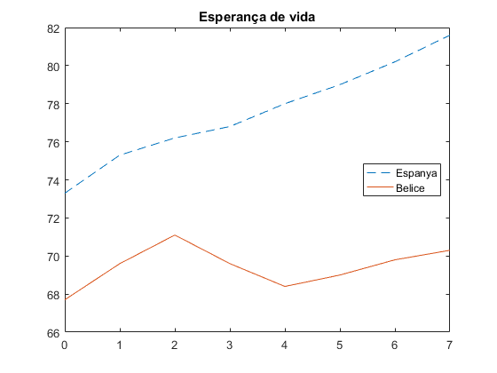
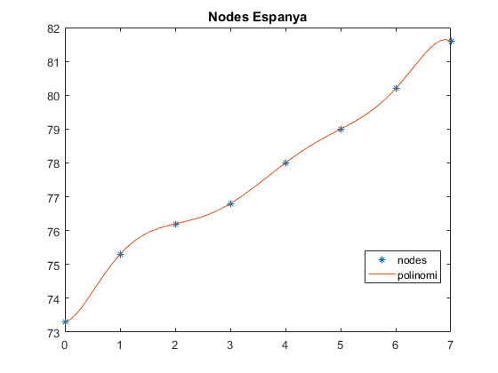
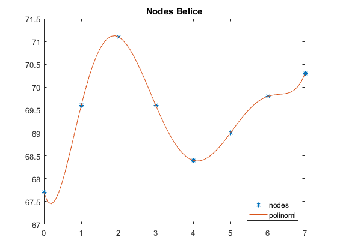
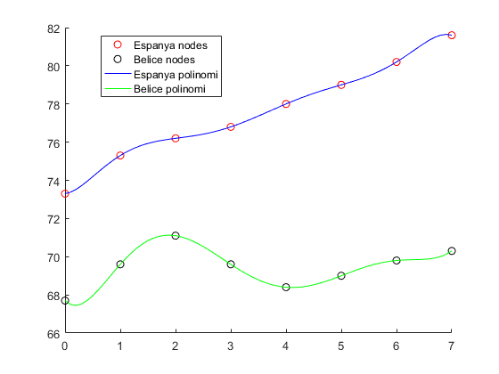

Contents
Aproximació dades
clear, clc, clf;
Dades
x = 0:7; y1 = [73.3 75.3 76.2 76.8 78.0 79.0 80.2 81.6]; y2 = [67.7 69.6 71.1 69.6 68.4 69.0 69.8 70.3]; plot(x,y1,'--',x,y2,'-'), title('Esperança de vida') legend('Espanya','Belice', 'location', 'best')
Espanya
*Polinomi interpolador *
n = length(x); p = polyfit(x,y1,n-1); coefs = p'; % Gràfic polinomi t = 0:0.1:7; v = polyval(coefs,t); plot(x,y1,'*',t,v), title('Nodes Espanya') legend('nodes','polinomi','location','best') %1970 % per sortir "fora" es necessari t = -2:0.1:9; % En aquest cas 1970 % v(11); % err = 72.0 - v(11); % abs(err); % % %2007 (2005 es 81) % v(81 + 2 + 2); % err = 80.9 - v(81 + 2 + 2); % abs(err); % % %1992 (1990 es 51) % v(51 + 4); % err = 77.4 - v(51 + 4); % abs(err);
Belice
*Polinomi interpolador *
n = length(x); p = polyfit(x,y2,n-1); coefs = p'; % Gràfic polinomi t = 0:0.1:7; v = polyval(coefs,t); plot(x,y2,'*',t,v), title('Nodes Belice') legend('nodes','polinomi','location','best') %1970 % per sortir "fora" es necessari t = -2:0.1:9; % En aquest cas 1970 % v(11); % err = 65.5 - v(11); % abs(err); % %2007 (2005 es 81) % v(81 + 2 + 2); % err = 69.5 - v(81 + 2 + 2); % abs(err); % % %1992 (1990 es 51) % v(51 + 4); % err = 70.7 - v(51 + 4); % abs(err)
Resultats junts
clf, t = 0:0.1:7; % Esp n = length(x); p1 = polyfit(x,y1,n-1); coefs1 = p1'; v1 = polyval(coefs1,t); % Belice n = length(x); p2 = polyfit(x,y2,n-1); coefs2 = p2'; v2 = polyval(coefs2,t); txt1 = 'Espanya nodes'; txt2 = 'Belice nodes'; txt3 = 'Espanya polinomi'; txt4 = 'Belice polinomi'; hold all; plot(x,y1,'Marker','o','Color','r','LineStyle','none','DisplayName', txt1) plot(x,y2,'Marker','o','Color','k','LineStyle','none','DisplayName', txt2) plot(t,v1,'Color','b','DisplayName', txt3), plot(t,v2,'Color','g','DisplayName', txt4) legend('show','location','best')